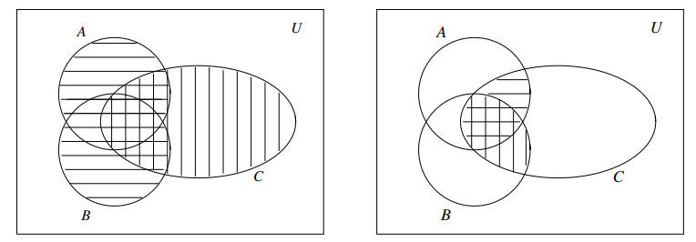
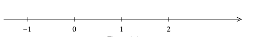

1 Sets, Real Numbers and Inequalities
1.1 Sets
1.1.1 Introduction
Idea of definition: A set is a collection of objects.
Terminology An object in a set is called an element or a member of the set. To describe sets, we can use listing or description.
Listing List all the elements in a set, e.g., \(\{1,2,3\}\) is the set containing three elements.
Description Describe a common property of the elements of the set, using the following notation: \[\{x:P(x)\}~~~\text{or}~~~ \{x|p(x)\}\] read “the set of all \(x\) such that \(P(x)\) (is true)”. For example \(\{x:x ~~\text{is a positive integer less than 101}\}=\{1,\ldots,100\}=\{x\in\mathbb{R}:x\le100\}\).
Notations
The set of all real numbers is denoted by \(\mathbb{R}\).
The set of all rational numbers is denoted by \(\mathbb{Q}\).
The set of all integers is denoted by \(\mathbb{Z}\).
The set of all positive integers is denoted by \(\mathbb{Z}_+\).
The set of all all natural numbers is denoted by \(\mathbb{N}\).
Example \(2\in\mathbb{N}, 2\in\mathbb{Q},\pi\in\mathbb{R},\pi\notin\mathbb{Q}\).
Example Let \(A=\{1,2,\ldots,100\}\) and \(B=\{2,3,4,5\}\). Then every element of set \(B\) is also an element of set \(A\). The equity means assigning a name to a set, i.e., the set \(\{1,2,\ldots,100\}\) is denoted by \(A\). Sometimes, we use the symbol \(:=\).
Notation Given an object \(x\) and a set \(A\), either \(x\) is an element of \(A\) denoted by \(x\in A\) or \(x\) is not an element of \(A\) denoted by \(x\notin A\).
Definition The set that has no element is called the empty set denoted by \(\emptyset\).
Definition Let \(A\) and \(B\) be sets. If every element of \(A\) is also an element of \(B\) and vice versa, then we say that \(A\) and \(B\) are equal, denotedby \(A=B\). Otherwise, we say that \(A\) and \(B\) are unequal, denoted by \(A\neq B\).
Example Let \(A=\{1,3,5,7,9\}\) and let \(B=\{x\in\mathbb{Z}_+: x ~~\text{is a prime number less than 10}\}\). Then we have \(A\neq B\).
Example Let \(A=\{1,2,3\}\) and let \(B=\{1,3,2\}\). Then we have \(A=B\).
Definition Let \(A\) and \(B\) be sets. If every element of \(A\) is also an element of \(B\), then we say that \(A\) is a subset of \(B\), denoted by \(A\subseteq B\). Otherwise, we say that \(A\) is not a subset of \(B\), denoted by \(A\nsubseteq B\).
Note
\(A\subseteq A\)
\(A=B\) if and only if \(A\subseteq B\) and \(B\subseteq A\).
\(A\nsubseteq B\) means that there is at least one element of \(A\) that is not an element of \(B\).
Example Let \(A=\{1,2,3,4,5\}\), \(B=\{1,3,5\}\), \(C=\{2,4,6\}\). Then we have \(B\subseteq A\) and \(C\nsubseteq A\).

1.1.2 Set operations
Definition Let \(A\) and \(B\) be sets.
The intersection of \(A\) and \(B\), denoted by \(A\cap B\), is the set whose elements are those belonging to both \(A\) and \(B\), that is \[A\cap B=\{x:x\in A ~~\text{and}~~x\in B\}.\]
The union of \(A\) and \(B\), denoted by \(A\cup B\), is the set whose elements are those belonging to either \(A\) or \(B\) or both \(A\) and \(B\), that is \[A\cup B=\{x: x\in A ~~\text{or}~~x\in B\}.\]
Example Let \(A=\{2,3,5\}\), \(B=\{2,5,6,8\}\) and \(C=\{1,2,3\}\). Find the following sets: \(A\cap B\), \(A\cup B\), \((A\cap B)\cap C\), \(A\cap (B\cap C)\).
Associative Set intersection and set union are associative. \[(A\cap B)\cap C=A\cap(B\cap C)\] \[(A\cup B)\cup C=A\cup(B\cup C)\]
Definition Let \(A\) and \(B\) be sets. The relative complement of \(B\) in \(A\), denoted by \(A\backslash B\) or \(A-B\), is the set whose elements are those belonging to \(A\) but not belonging to \(B\), that is, \[A\backslash B=\{x\in A:x\notin B\}.\]
Example Let \(A=\{a,b,c\}\) and \(B=\{c,d,e\}\). Then we have \(A\backslash B=\{a,b\}.\)
Universal set A large enough set containing all objects under consideration, denoted by \(U\).
Example In considering whole numbers, we may use \(\mathbb{Z}\) as a universal set. The set of all prime numbers can be written as \(\{x\in\mathbb{Z}:x>0 ~\text{and}~x~ \text{has exactly two divisors} \}\).
Definition Let \(U\) be a universal set and let \(B\) be a subset of \(U\). Then the set \(U\backslash B\) is called the complement of \(B\) (in \(U\)) and is denoted by \(B'\) (or \(B^c\)).
Venn Diagrams A Venn diagram is a device to represent sets graphically.
Formulas for set operations
\[(A\cup B)\cap C=(A\cap B)\cup(B\cap C)\]

1.2 Real Numbers
1.2.1 The Number Systems
Natural numbers \(\mathbb{N}=\{0,1,2,\ldots\}\)
Integers \(\mathbb{Z}=\{\ldots,-2,-1,0,1,2,\ldots\}\)
Rational numbers \(\mathbb{Q}=\{\frac{p}{q}:p,q~~ \text{are integers, and}~~q\neq 0\}.\) \(\mathbb{Z}\subseteq\mathbb{Q}.\)
Irrational numbers Numbers that can be represented by non-terminating and non-repeating decimals. For example \(\pi\) and \(\sqrt{2}\).
Real numbers Rational numbers together with irrational numbers are called real numbers, denoted by \(\mathbb{R}\).
Real number line Real numbers can be represented by points on a line, called the real number line.

Intervals The following types of subsets of \(\mathbb{R}\) are called intervals
\[[a,b]=\{x\in\mathbb{R}:a\le x\le b\}\] \[(a,b)=\{x\in\mathbb{R}:a< x< b\}\] \[[a,b)=\{x\in\mathbb{R}:a\le x< b\}\] \[(a,b]=\{x\in\mathbb{R}:a< x\le b\}\] \[[a,\infty)=\{x\in\mathbb{R}:a\le x\}\] \[(a,\infty)=\{x\in\mathbb{R}:a< x\}\] \[(\infty,b]=\{x\in\mathbb{R}:x\le b\}\] \[(\infty,b)=\{x\in\mathbb{R}:x< b\}\] \[(-\infty,\infty)=\mathbb{R}\]
Terminology
Bounded intervals: \([a,b],(a,b),(a,b],[a,b)\)
Unbouded intervals: \((-\infty,b),(-\infty,b],(a,\infty),[a,\infty),(-\infty,\infty)\)
Open intervals: \((a,b),(-\infty,b),(a,\infty),(-\infty,\infty)\)
Closed intervals: \([a,b],(\infty,b],[a,\infty),(-\infty,\infty)\)
Closed and bounded intervals: \([a,b]\)
Degenerated interval: An interval containing only one element of \(\mathbb{R}\). For example \(\{a\}\).
Empty interval: \(\emptyset\).
Example \(A=[1,5]\) and \(B=(3,10]\). Find \(A\cap B\) and \(A\cup B\).
1.2.2 Radicals
Root Let \(a\) and \(b\) be real numbers and let \(q\) be a positive integer. If \(a^q=b\), we say that \(a\) is a \(q\)th root of \(b\).
Example \(-2\) is the cube root of \(-8\). \(3\) and \(-3\) are the square roots of \(9\).
Note If \(q\) is odd, then every real number has a unique \(q\)th root. If \(q\) is even, then
every positive real number has two \(q\)th roots;
negative real numbers do not have \(q\)th root;
the \(q\)th root of \(0\) is \(0\).
Principal root Denoted by \(\sqrt[q]{b}\).
If \(q\) is odd, \(\sqrt[q]{b}\) is the \(q\)th root of \(b\).
If \(q\) is even,
If \(b>0\), \(\sqrt[q]{b}\) is the positive \(q\)th root of \(b\).
If \(b<0\), the principal root is undefined.
If \(b=0\), \(\sqrt[q]{b}=0\).
Terminology The symbol \(\sqrt[q]{b}\) is called a radical, in which \(q\) is called the index and b the radicand.
Formula \(b^{\frac{p}{q}}=\sqrt[q]{b^p}\).
1.3 Solving Inequalities
An inequality in one unknown \(x\) can be written in one of the following forms:
\(F(x)>0\)
\(F(x)\geq0\)
\(F(x)<0\)
\(F(x)\le 0\)
Definition Consider an inequality in the form \(F(x)>0\).
A real number \(x_0\) satisfying \(F(x_0)>0\) is caleed a solution to the inequality.
The set of all solutions to the inequality is called the solution set to the inequality.
Polynomial inequalities have a liking form of \(a_nx^n+a_{n-1}x^{n-1}+\cdots+a_0<0\). Note that when \(n=1\) it is a linear inequality.
Example Find the solution set to \(1\le3-2x\le9.\) Find the solution set to \(2x+1<3\) and \(3x+10<4\).
Quadratic inequalities Example: Find the solution set to the inequality \(x^2+2x-15>0\).
Polynomial inequality with degrees \(\geq 3\) Example: Factorize the polynomial \(p(x)=x^3+3x^2-4x-12\) and find the solution set to \(p(x)\le0\).
Theorem Let \[p(x)=c_nx^n+c_{n-1}x^{n-1}+\cdots+c_1x+c_0\] be a polynomial of degree \(n\) where \(c_0,c_1,\ldots,c_n\in\mathbb{Z}\). Suppose \((ax-b)\) is a factor of \(p(x)\) where \(a,b\in\mathbb{Z}\). Then \(a\) divides \(c_n\) and \(b\) divides \(c_0\).